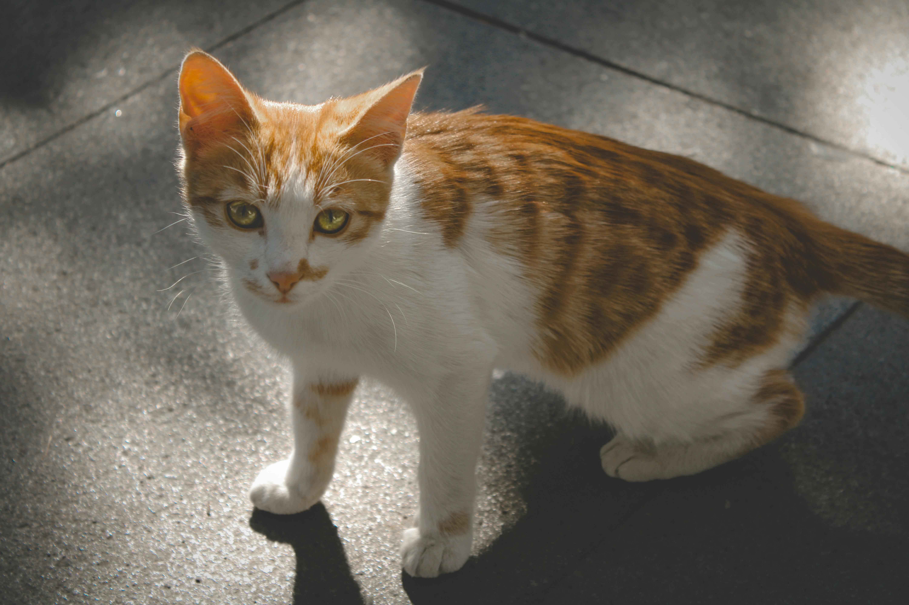
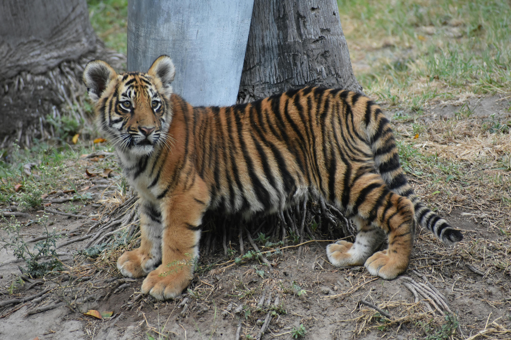
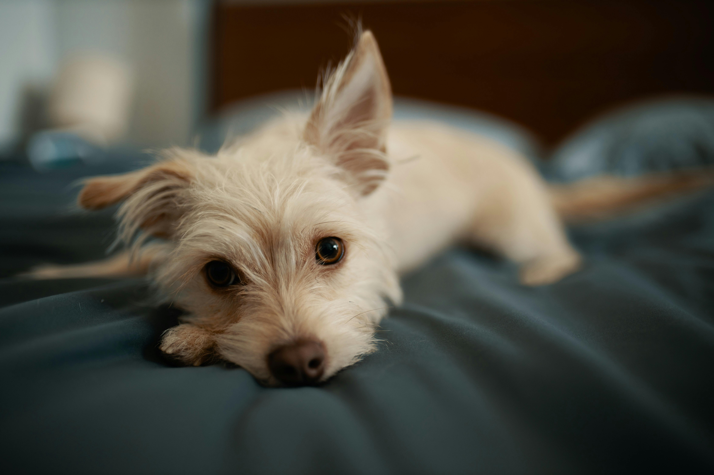

Le chat qui ne devait pas survivre

Dans une ruelle oubliée, un petit chat gris vivait dans la peur. Des gens le chassaient, parfois le blessaient pour “s’amuser”. Il avait appris à ne plus faire confiance à personne. Un jour, affaibli, il s’est caché derrière une poubelle, prêt à mourir sans bruit. C’est là que quelqu’un l’a trouvé… et l’a inscrit sur notre site d’adoption. Les premiers jours, il refusait même de manger devant les humains. Puis, lentement, une famille patiente lui a laissé du temps. Aujourd’hui, ce chat dort sur un canapé, au soleil. Il tremble encore parfois. Mais il est vivant. Et surtout, il n’est plus seul.
Retour en hautLe bébé tigre né en captivité.

Ce bébé tigre n’a jamais connu la jungle. Né dans un endroit illégal, il était enfermé, manipulé, utilisé pour attirer des visiteurs. Trop petit pour comprendre, mais assez grand pour ressentir la peur constante. Quand les autorités ont fermé cet endroit, il était déjà faible, méfiant, presque brisé. Il a été placé sur notre plateforme pour trouver un refuge adapté. Un centre spécialisé l’a adopté. Là-bas, personne ne le force, personne ne le touche sans raison. Il découvre lentement ce que signifie vivre sans peur. Il ne sera jamais complètement “sauvage”. Mais il a récupéré quelque chose de plus précieux : une vie digne.
Retour en hautLe chiot abandonné après la cruauté

Un petit chiot avait été attaché dans un terrain vide. Sans eau, sans nourriture. Les jours passaient, et personne ne venait. Ce n’était pas juste de la négligence — c’était un abandon cruel. Quand il a été retrouvé, il ne bougeait presque plus. Mais il respirait encore. Grâce à notre site, son histoire a touché une personne. Une seule. Et parfois, ça suffit. Cette personne l’a adopté, soigné, nourri, aimé. Aujourd’hui, ce chien court dans un jardin. Il est énergique, joyeux… comme s’il avait décidé d’oublier. Mais son passé reste une preuve : sans intervention, il n’aurait jamais survécu.
Retour en haut